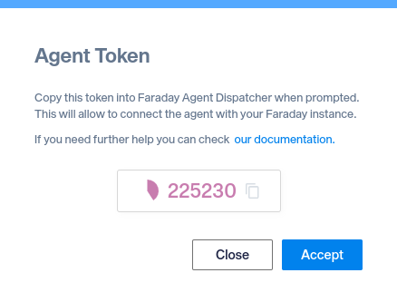
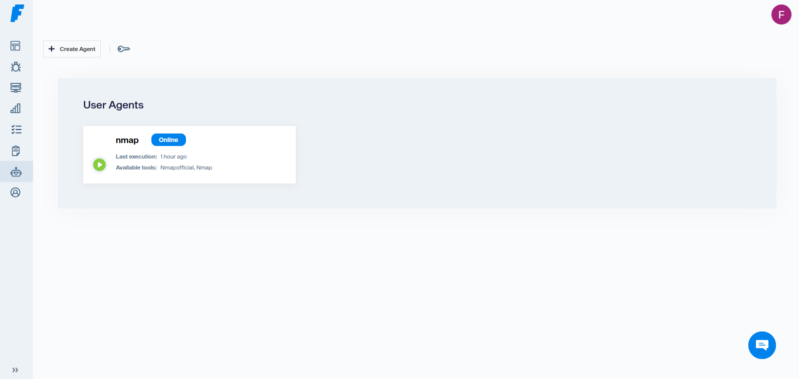
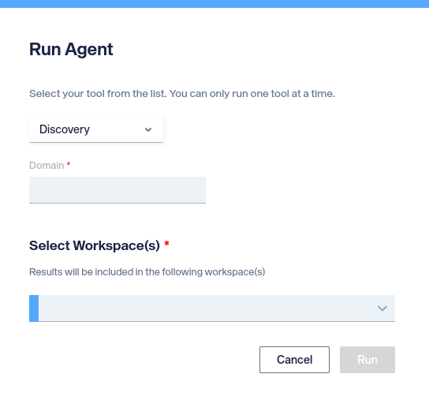

Getting started¶
Install¶
$ pip install faraday_agent_dispatcher
$ git clone https://github.com/infobyte/faraday_agent_dispatcher.git
$ cd faraday_agent_dispatcher
$ pip install .
Configure your agent¶
The dispatcher can be configured with the wizard command:
$ faraday-dispatcher config-wizard
The wizard will ask for which configuration you would set, the agent configuration or the executors configuration.
Agent configuration¶
The proper configuration differ if you want to use SSL connection with your Faraday server. When using SSL you can use a self-signed certificate!
Examples:
Example
$ faraday-dispatcher config-wizard
Do you want to edit the [A]gent or the [E]xecutors? Do you want to [Q]uit?
(A, E, Q) [Q]: A
Section: server
host [127.0.0.1]:
ssl [Y/n]:
api_port [443]:
websocket_port [443]:
ssl_ignore [y/N]: N
Section: agent
agent_name [agent]: sslAgent
Do you want to edit the [A]gent or the [E]xecutors? Do you want to [Q]uit?
(A, E, Q) [Q]: Q
Example
$ faraday-dispatcher config-wizard
Do you want to edit the [A]gent or the [E]xecutors? Do you want to [Q]uit?
(A, E, Q) [Q]: A
Section: server
host [127.0.0.1]:
ssl [True]: False
api_port [5985]:
websocket_port [9000]:
Section: agent
agent_name [agent]: sslFalseAgent
Do you want to edit the [A]gent or the [E]xecutors? Do you want to [Q]uit?
(A, E, Q) [Q]: Q
Warning
We stronglly recommend to use https if not using within localhost
Executors configuration¶
When adding an executor you can set an executor with minimum configuration, which ones we maintain, call as official executor; or your own custom executors.
In the next examples, you can see how to add a nessus executor, both as an official and custom executor:
Example
$ faraday-dispatcher config-wizard
Do you want to edit the [A]gent or the [E]xecutors? Do you want to
[Q]uit? (A, E, Q) [Q]: E
The actual configured executors are: []
Do you want to [A]dd, [M]odify or [D]elete an executor? Do you want to
[Q]uit? (A, M, D, Q) [Q]: A
Name: official
Is a custom executor? [y/N]: N
The executors are:
1: arachni
2: burp
3: crackmapexec
4: gvm_openvas
5: insightvm
6: nessus
7: nikto2
8: nmap
9: nuclei
10: openvas_legacy
+: Next page
Q: Don't choose
Choose one: 6
Environment variable NESSUS_USERNAME value: username
Environment variable NESSUS_PASSWORD value: password
Environment variable NESSUS_URL value: https://nessus_url.com
New repository executor added
The actual configured executors are: ['official']
Do you want to [A]dd, [M]odify or [D]elete an executor? Do you want to
[Q]uit? (A, M, D, Q) [Q]: Q
Do you want to edit the [A]gent or the [E]xecutors? Do you want to
[Q]uit? (A, E, Q) [Q]: Q
Example
$ faraday-dispatcher config-wizard
Do you want to edit the [A]gent or the [E]xecutors? Do you want to
[Q]uit? (A, E, Q) [Q]: E
The actual configured executors are: []
Do you want to [A]dd, [M]odify or [D]elete an executor? Do you want to
[Q]uit? (A, M, D, Q) [Q]: A
Name: custom
Is a custom executor? [y/N]: Y
Command to execute [exit 1]: python3
{REPO_FOLDER}/faraday_agent_dispatcher/static/executors/official/nessus.py
The actual custom executor's environment variables are: []
Do you want to [A]dd, [M]odify or [D]elete an environment variable? Do you
want to [Q]uit? (A, M, D, Q) [Q]: A
Environment variable name: NESSUS_USERNAME
Environment variable value: username
The actual custom executor's environment variables are: ['nessus_username']
Do you want to [A]dd, [M]odify or [D]elete an environment variable? Do you
want to [Q]uit? (A, M, D, Q) [Q]: A
Environment variable name: NESSUS_PASSWORD
Environment variable value: password
The actual custom executor's environment variables are: ['nessus_username',
'nessus_password']
Do you want to [A]dd, [M]odify or [D]elete an environment variable? Do you
want to [Q]uit? (A, M, D, Q) [Q]: A
Environment variable name: NESSUS_URL
Environment variable value: https://nessus_url.com
The actual custom executor's environment variables are: ['nessus_username',
'nessus_password', 'nessus_url']
Do you want to [A]dd, [M]odify or [D]elete an environment variable? Do you
want to [Q]uit? (A, M, D, Q) [Q]: Q
The actual custom executor's arguments are: []
Do you want to [A]dd, [M]odify or [D]elete an argument? Do you want to
[Q]uit? (A, M, D, Q) [Q]: A
Argument name: NESSUS_SCAN_NAME
Is mandatory? [y,N]: N
The actual custom executor's arguments are: ['nessus_scan_name']
Do you want to [A]dd, [M]odify or [D]elete an argument? Do you want to
[Q]uit? (A, M, D, Q) [Q]: A
Argument name: NESSUS_URL
Is mandatory? [y,N]: N
The actual custom executor's arguments are: ['nessus_scan_name',
'nessus_url']
Do you want to [A]dd, [M]odify or [D]elete an argument? Do you want to
[Q]uit? (A, M, D, Q) [Q]: A
Argument name: NESSUS_SCAN_TARGET
Is mandatory? [y,N]: Y
The actual custom executor's arguments are: ['nessus_scan_name',
'nessus_url', 'nessus_scan_target']
Do you want to [A]dd, [M]odify or [D]elete an argument? Do you want to
[Q]uit? (A, M, D, Q) [Q]: A
Argument name: NESSUS_SCAN_TEMPLATE
Is mandatory? [y,N]: N
The actual custom executor's arguments are: ['nessus_scan_name',
'nessus_url', 'nessus_scan_target', 'nessus_scan_template']
Do you want to [A]dd, [M]odify or [D]elete an argument? Do you want to
[Q]uit? (A, M, D, Q) [Q]: Q
The actual configured executors are: ['custom']
Do you want to [A]dd, [M]odify or [D]elete an executor? Do you want to
[Q]uit? (A, M, D, Q) [Q]: Q
Do you want to edit the [A]gent or the [E]xecutors? Do you want to [Q]uit?
(A, E, Q) [Q]: Q
Warning
Compared to the official executor example, this is more complex and ask for both arguments and configuration environment variables. We strongly recommend to read the custom executors technical section
If you want to know how the executors work, you can check their technical section.
Running the agent¶
Start the agent¶
The first time you run an agent, you need a token provided by the server That required token can be taken from the http(s)://{faraday_server_host}/#/admin/agents
For example in:

Your token is: 225230
The dispatcher can be executed with the run command, passing this token as an option:
$ faraday-dispatcher run --token={TOKEN}
Expected output
The expected output when the dispatcher run command is as follows
$ faraday-dispatcher run
INFO - token_registration_url: {faraday_host}/_api/v3/ws/agent2/agent_registration
INFO - Registered successfully
INFO - Connection to Faraday server succeeded
Warning
The token is only needed the first time you run an agent, afterward you can run it without the option, as:
$ faraday-dispatcher run
Running an executor from faraday¶
- Go to https://{faraday_server_host}/automation/agents 
- Click the green play bottom in the agent
- Select the executor, fill the arguments 
- Click
Run
Expected output
```shell INFO - Parsing data: {"execution_ids": [XX], "agent_id": XX, "workspaces": [{WORKSPACE_NAME}], "action": "RUN",
"executor": "nmapOfficial", "args": {EXECUTOR_ARGS}, "plugin_args": {"ignore_info": true, "resolve_hotname": true}} INFO - Running {EXECUTOR_NAME} executor [Executor data] INFO - Executor {EXECUTOR_NAME} finished successfully ```
Error output
```shell INFO - Parsing data: {"execution_ids": [XX], "agent_id": XX, "workspaces": [{WORKSPACE_NAME}], "action": "RUN",
"executor": "nmapOfficial", "args": {EXECUTOR_ARGS}, "plugin_args": {"ignore_info": true, "resolve_hotname": true}} INFO - Running {EXECUTOR_NAME} executor [Executor data and errors] WARNING - Executor {EXECUTOR_NAME} finished with exit code 1 ```